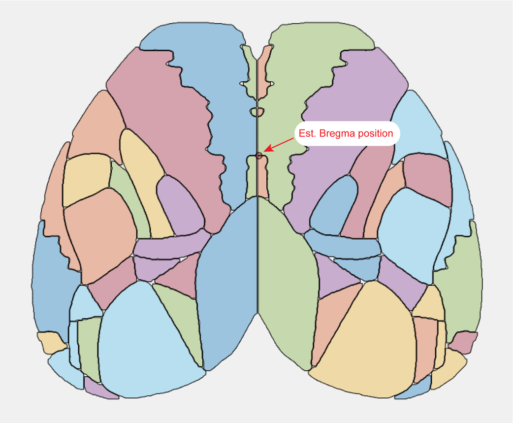
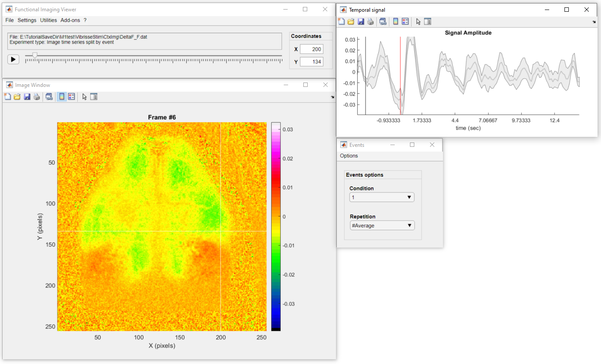
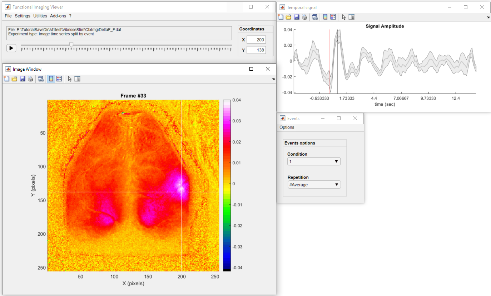
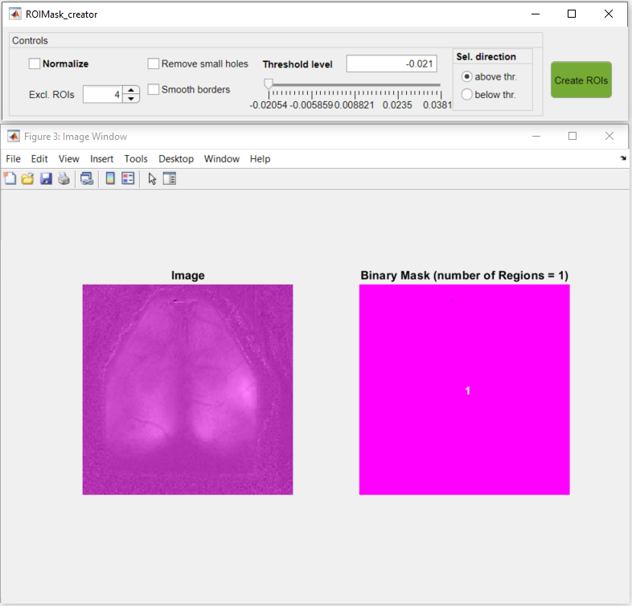
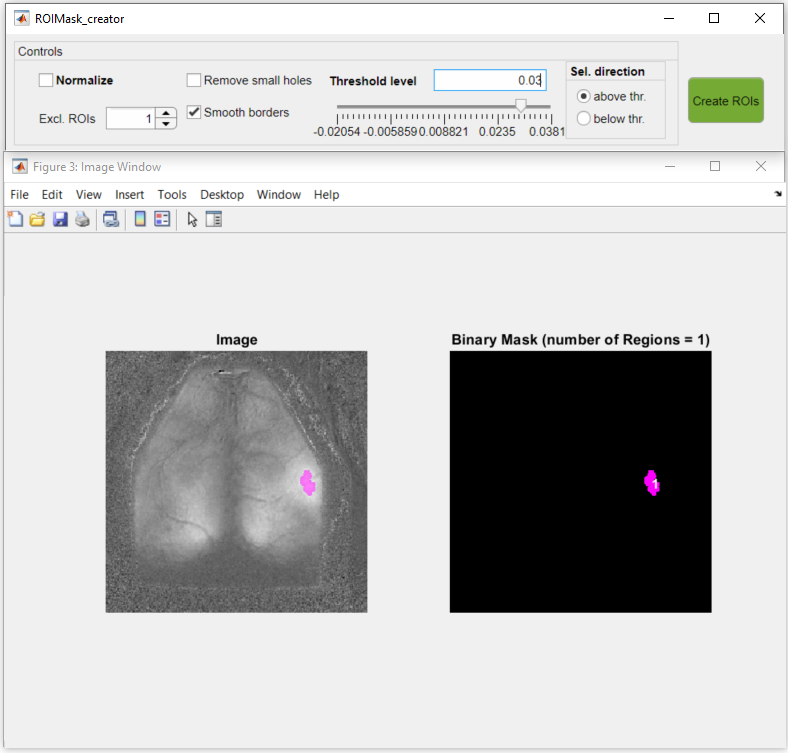
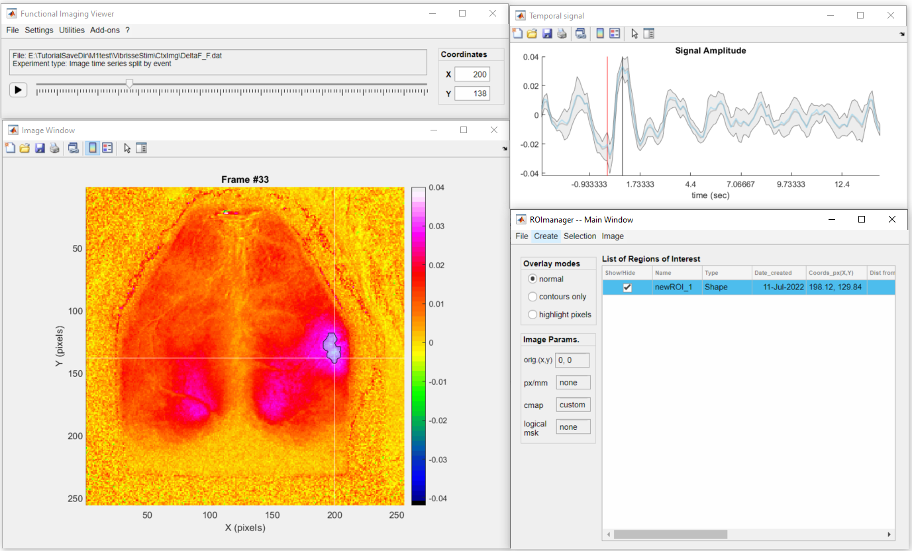

In this tutorial, you will learn how to create regions of interest (ROIs) from imaging data. ROIs are frequently used in imaging projects to delimit areas of interest such as anatomical landmarks or brain functional modules identified by neuronal activation such as in the example used in our tutorial on creating event-triggered maps.
The umIToolbox has a dedicated app that creates, edits and manages ROIs called ROImanager. The app was briefly introduced in the tutorial on recording alignment where it was used to create an Imaging Reference Frame file. There, we showed how to create a new reference point, how to set the image's pixel size and how to create a logical mask. These steps won't be covered here. For further details on the ROImanager, please refer to the app's documentation. In this tutorial, we will focus on the different ways to create ROIs and how to save them for later use on the toolbox.
In the examples below, we show how to create a polygonal ROI and a Point ROI. Here, we already opened a frame from a recording in ROImanager app and set the reference point, pixel size, colormap and logical mask.
To create a polygonal ROI:
How to draw a new polygonal ROI
Point ROIs are simply ROIs consisted of a single pixel from the image. This type of ROI does not allow any type of editing. Thus, if you want to change the location of the ROI, you can simply create a new point with the same name of the one that you want to change.
There are two ways to create a point ROI: interactively or using the X,Y coordinates.
To create an ROI for a single pixel (interactively):
How to select (interactively) a single pixel as ROI
Alternatively, you can select a pixel by it's X,Y coordinates as so:
How to select (using X,Y coordinates) a single pixel as ROI
The ROImanager app provides a preset ROI mask composed by the top view of the Mouse Allen Brain Atlas:

Preset ROIs from the Mouse Allen Brain Atlas showing the Bregma estimated position.
Important
The position of the Bregma is provided here as a rough estimate. The data from the Mouse Brain atlas does not provide any anatomical landmark coordinates from the mouse skull. For more info on this, see this discussion from the Allen Brain Map Community Forum.
Tip
For a more accurate result, it is advisable to set Bregma as the image’s reference point and to set the image’s pixel size before applying the ROIs from the Mouse Brain Atlas. Once these parameters are set, the ROI mask will be automatically place the mask’s estimated Bregma position over the reference point and resize it to approximate the mask’s real size.
Here is how to apply the ROIs from the Mouse Allen Brain Atlas:
How to use the Mouse Allen Brain Atlas to generate ROIs
Note
In the example above, the ROIs that overlayed with the logical mask are redrawn to remove the areas outside the cortex.
This example shows how to create the full surface of all cortical areas from the Mouse Allen Brain Atlas. The ROImanager offers the option to customize the size of the ROIs and to generate only the regions' centroids. For further details, please refer to the app's documentation.
Another way to create ROIs is to use the image's pixel values to select a region with values above or below a threshold. This feature is particularly useful to delimit regions based on the amplitude of a signal. For instance, you can create ROIs to select a region of the cortex activated by a sensory stimulation. In the example below, we show how to create an ROI to select the cortical area activated after a whisker stimulation in a mouse expressing GCaMP6.
Tip
When creating ROIs by threshold, it is useful to work with the ROImanager app as a add-on from the DataViewer app because you can use the DataViewer to easily navigate through the recording to find the best frames to be thresholded. This is the case of the example below.
The data used in this example is an image time series that was preprocessed and split by trials to show the normalized response amplitude (ΔF/F) to a vibro-tactile stimulation of the left whiskers. The data was loaded in DataViewer to show the average of 10 trials. The colormap and color scale were adjusted to better visualize the activated region.
Here is a snapshot of the input data:
The first thing to do is to navigate through the data to find the frame to be thresholded. Here, we will select the frame with the peak response (around 800 ms after the stimulation):
To launch the thresholding tool:
Below is an overview of the thresholding tool. The main GUI contains the control options to create the ROIs and the Image window shows the selected frame on the left in grayscale and on the right, a binary image showing the ROIs. For further details on how to use the app, read the documentation of the ROImanager app.

Overview of the ROIMask Creator app
You can use the slider in the main GUI to interactively set the threshold:
Or, you can set the exact threshold value in the threshold level edit field in the main GUI.
Now, to select the region activate by the whisker stimulation, we will set the following parameters:
Here is the preview of the ROI with the abovementioned parameters set:
Finally, click on Create ROIs to generate the ROI based on the thresholded image. The ROI will be created and listed in the ROImanager app with a generic name (newROI_1):
To change the name of the ROI, click on the ROI name listed in the table in ROImanager, type the new name and press Enter:
After creating the ROIs, you can save the ROIs to a ROImasks_<NAME>.mat file. The file will contain all the statistical measurements shown in the ROImanager table and the individual ROI masks. As you will see in the following tutorials, the ROI files will be used to extract and aggregate the data from each ROI.
In the ROImanager app:
To save the current ROIs to a new file:
Note
This note concerns users of the main GUI (not DataViewer as standalone)!
If the ROImanager app was called from the toolbox main GUI (umIToolbox) the ROI file will automatically be saved in the subject's save folder. However, if the app was opened as an Add-on from DataViewer you should manually select the subject's folder to save the ROI file in. It advisable to save the ROI file inside the subject's save directory because some of the toolbox functions using the ROI file will look for it there!